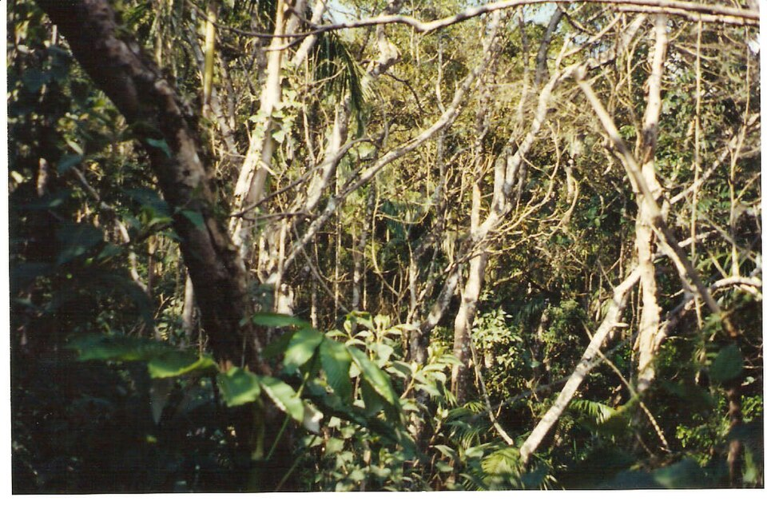
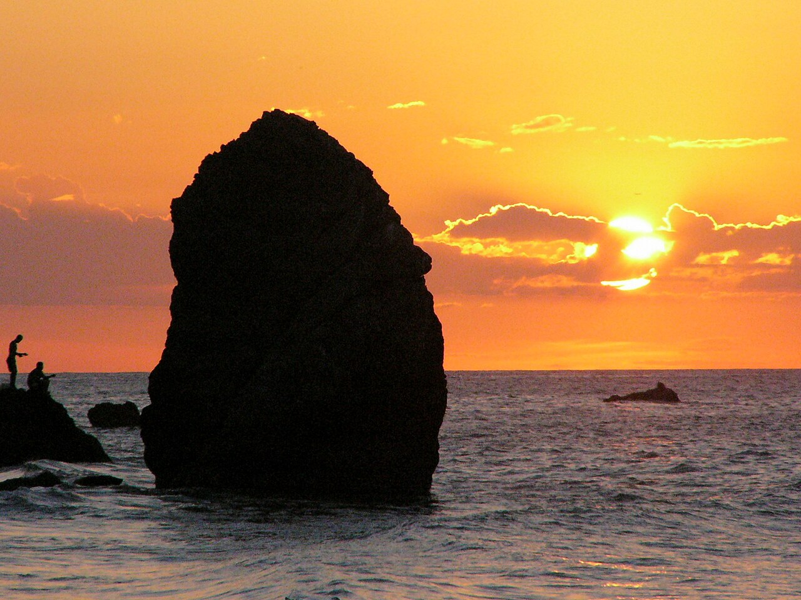
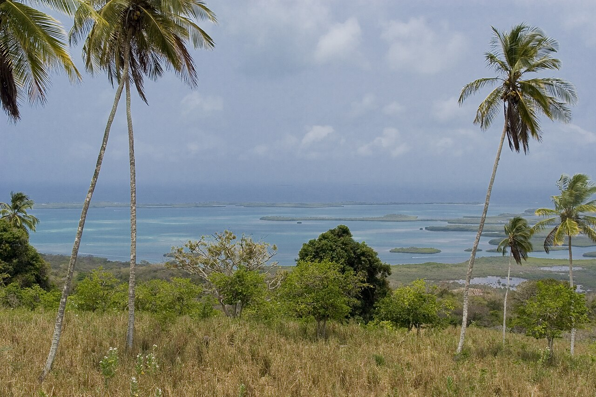
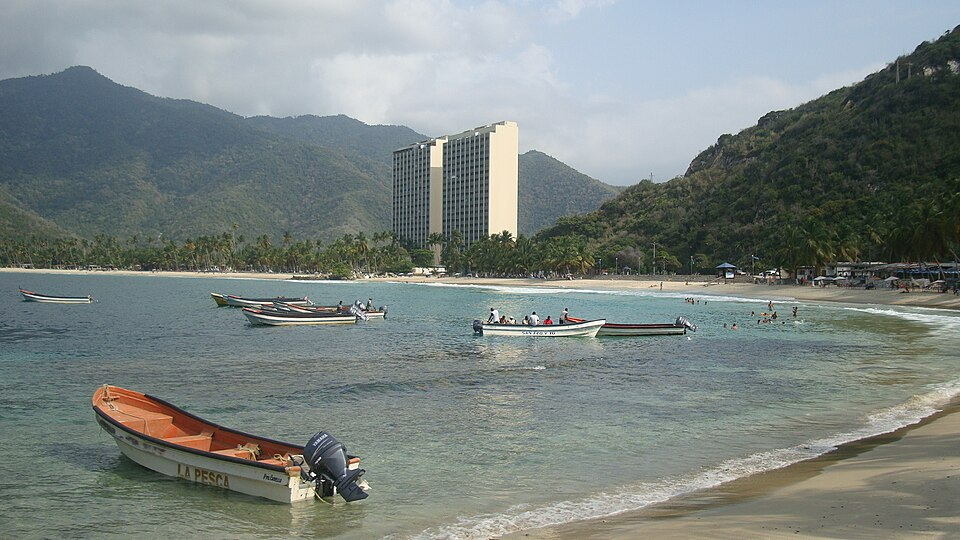
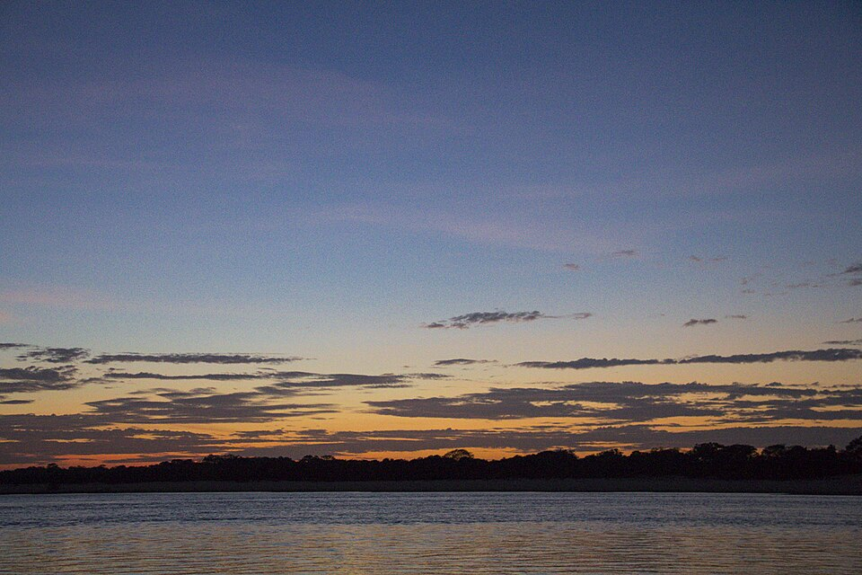
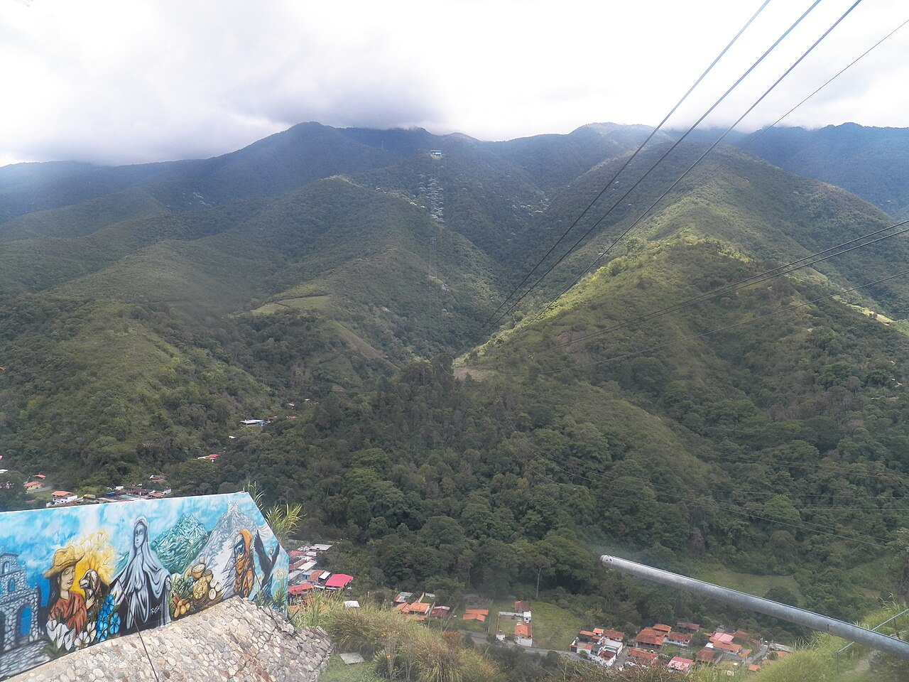

Destinos y actividades
Estos son los principales destinos que ofrecemos. Cada ficha incluye la ubicación, el estado, las actividades disponibles y un enlace a Wikipedia para ampliar la información.
Destinos de selva y montaña

Salto Ángel (Kerepacupay Merú)
BolívarLa cascada más alta del mundo con 979 metros de caída libre. Se llega en curiaro por el río Churún durante 4 horas y se camina hasta la base del Auyán-tepui. El Parque Nacional Canaima es Patrimonio Mundial de la UNESCO desde 1994.
- Excursión en curiaro por el río Churún
- Trekking hasta el mirador de la base
- Vuelo en avioneta sobre el tepui (opcional)
- Observación de flora y fauna endémica

Parque Nacional Canaima
BolívarUn parque de 30.000 km² con tepuis, lagunas, ríos y selva amazónica. Es el segundo parque nacional más grande de Venezuela y el sexto del mundo. Alberga el Salto Ángel, el Monte Roraima y el Kukenán-tepui.
- Navegación por la laguna de Canaima
- Visita a las cataratas Ucaima y Hacha
- Trekking al Monte Roraima (7-10 días)
- Observación de aves y mariposas

Monte Roraima
BolívarEl tepui más alto y famoso de Venezuela, en la frontera con Brasil y Guyana. Su cima es un ecosistema único con especies endémicas que no existen en ningún otro lugar del planeta. La caminata dura entre 7 y 10 días.
- Trekking de varios días con campamento
- Observación de flora endémica (plantas carnívoras)
- Fotografía de paisajes únicos
- Visita a cuevas y formaciones rocosas

Auyán-tepui
BolívarLa meseta más grande de Canaima, con paredes verticales de hasta 1.000 metros. De su cima nace el Salto Ángel. Es uno de los tepuis más fotografiados del parque y un símbolo de la geografía venezolana.
- Vuelo en avioneta sobre el tepui
- Fotografía aérea del Salto Ángel
- Observación de cóndores andinos

Parque Nacional Henri Pittier
AraguaEl parque nacional más antiguo de Venezuela (1937), con selva nublada, playas y una increíble diversidad de aves (más de 500 especies). Ideal para senderismo, observación de aves y relax en playas como Choroní.
- Senderismo por la selva nublada
- Observación de aves (tucanes, colibríes)
- Playas de Choroní y Cuyagua
- Visita al pueblo colonial de Choroní

Parque Nacional Yacambú
LaraUn parque de selva nublada en el estado Lara, con la Laguna Negra como su principal atractivo. Es un bosque húmedo tropical con una gran diversidad de orquídeas, helechos y aves.
- Trekking a la Laguna Negra
- Observación de orquídeas y bromelias
- Fotografía de paisajes de montaña
Destinos de costa y playa

Los Roques
FalcónUn archipiélago de más de 300 islas, cayos y bancos de arena en el Caribe. El Gran Roque es el más grande y tiene el faro más alto del país. Es el mejor sitio de Venezuela para buceo y snorkel.
- Snorkel y buceo en arrecifes de coral
- Playas de arena blanca y aguas cristalinas
- Observación de tortugas marinas
- Paseos en kayak por los cayos

Playa Los Caracas
La GuairaUna playa en la carretera de la costa, a 12 km de Anare, en el estado La Guaira. Forma parte de la antigua Ciudad Vacacional de Los Caracas (1955), diseñada por Carlos Raúl Villanueva. Tiene tres playas: Greysmar, Pescado y La Punta.
- Camping y zona de carpas
- Snorkel y buceo en el helipunto
- Pesca deportiva
- Restaurantes y servicios

Tucacas
FalcónCiudad costera fundada en 1499 por Alonso de Ojeda. Es la puerta de entrada al Parque Nacional Morrocoy y tiene un paseo marítimo remodelado, artesanía local y gastronomía basada en pescado fresco.
- Paseos en lancha a los cayos de Morrocoy
- Visita al paseo marítimo y artesanías
- Gastronomía local (pescado fresco)
- Excursiones a Chichiriviche

Parque Nacional Morrocoy
FalcónUn parque nacional con cayos de arena blanca y aguas cristalinas. Los más famosos son Cayo Sombrero, Cayo Sal, Cayo Playuela y Los Juanes. Se llega en lancha desde Tucacas o Chichiriviche.
- Snorkel en arrecifes de coral
- Playas de arena blanca
- Observación de aves marinas
- Paseos en lancha entre cayos

Bahía de Cata
FalcónUna bahía protegida en el estado Falcón, cerca del cabo San Román. Es un destino tranquilo con playas de arena blanca y aguas calmas, ideal para familias y para practicar deportes acuáticos.
- Playas tranquilas para familias
- Deportes acuáticos (kitesurf, windsurf)
- Pesca artesanal
- Observación de delfines

Médanos de Coro
FalcónUn desierto de dunas de hasta 30 metros de altura en el estado Falcón. Se puede recorrer en camello, practicar sandboard y disfrutar de atardeceres espectaculares. Es un paisaje único en Venezuela.
- Paseos en camello
- Sandboard por las dunas
- Fotografía al atardecer
- Observación de estrellas

Isla de Margarita
Nueva EspartaLa isla más grande de Venezuela, con playas paradisíacas, castillos coloniales y una infraestructura turística desarrollada. Playa El Agua es una de las más famosas, con palmeras y aguas cálidas.
- Playas de arena blanca
- Deportes acuáticos (surf, kitesurf)
- Visita a castillos coloniales
- Gastronomía isleña

Mochima
Sucre / AnzoáteguiUn parque nacional con 121 playas, 20 islas y una gran diversidad de fauna marina. El pueblo de Mochima es el punto de partida para explorar las playas de La Gabarra, Blanca, Las Maritas y Manare.
- Paseos en lancha por las islas
- Snorkel y buceo
- Observación de delfines
- Playas de arena blanca

Choroní
AraguaUn pueblo costero con playas de ensueño, acceso al Parque Nacional Henri Pittier y un ambiente relajado. Playa Grande es la más famosa, con palmeras y aguas cristalinas.
- Playas de arena blanca
- Senderismo por el parque nacional
- Observación de aves
- Gastronomía local
Destinos de llanos y río

Río Capanaparo
ApureUn río de aguas negras afluente del Orinoco, que recorre la llanura apureña entre sabanas inundadas, palmares de moriche y los Médanos de la Soledad. Es un paraíso para la observación de fauna.
- Safari fotográfico en bote
- Observación de cocodrilos del Orinoco
- Avistamiento de aves acuáticas
- Pesca deportiva

Relámpagos del Catatumbo
ZuliaUn fenómeno natural único en el mundo: tormentas eléctricas casi continuas sobre el lago de Maracaibo, con hasta 300 relámpagos por noche. Se observa mejor entre mayo y septiembre.
- Observación nocturna desde el agua
- Fotografía de larga exposición
- Explicación científica del fenómeno

Lago de Maracaibo
ZuliaEl lago más grande de América del Sur, con una superficie de 13.000 km². Es famoso por los Relámpagos del Catatumbo y por su rica biodiversidad acuática. Se puede recorrer en lancha.
- Paseos en lancha por el lago
- Observación de aves acuáticas
- Visita a palafitos
- Pesca deportiva

Gran Sabana
BolívarUna sabana tropical con tepuis, ríos cristalinos y una vegetación única. Es la puerta de entrada al Parque Nacional Canaima y al Monte Roraima. Ideal para trekking, fotografía y observación de fauna.
- Trekking por la sabana
- Visita a comunidades indígenas pemón
- Observación de aves y mamíferos
- Baños en ríos de aguas cristalinas

Delta del Orinoco
Delta AmacuroEl delta del río Orinoco es un laberinto de canales, islas y manglares habitado por la etnia warao. Es un destino único para la observación de fauna y el contacto con culturas indígenas.
- Paseos en curiaro por los canales
- Observación de delfines de río
- Visita a comunidades warao
- Avistamiento de aves acuáticas
Destinos de montaña y Andes

Mérida y el Teleférico Mukumbarí
MéridaLa ciudad de Mérida es la capital de los Andes venezolanos. El Teleférico Mukumbarí es el más alto y largo del mundo, con 12,5 km de recorrido. Desde su estación más alta se puede ver el Pico Bolívar.
- Recorrido en teleférico
- Trekking al Pico Bolívar
- Visita a pueblos andinos (Mucuchíes, Los Aleros)
- Observación de cóndores

Pico Bolívar
MéridaEl pico más alto de Venezuela con 4.978 metros sobre el nivel del mar. Se encuentra en la Sierra Nevada de Mérida y es un destino popular para montañistas y amantes de la naturaleza.
- Trekking de varios días
- Escalada en hielo y roca
- Observación de flora andina
- Fotografía de paisajes nevados

Kaieteur
Guyana (frontera)Aunque técnicamente está en Guyana, las cataratas de Kaieteur son accesibles desde el sureste de Venezuela. Con 226 metros de caída, es una de las cascadas más potentes del mundo.
- Excursión en avioneta
- Observación de ranas doradas
- Fotografía de la cascada